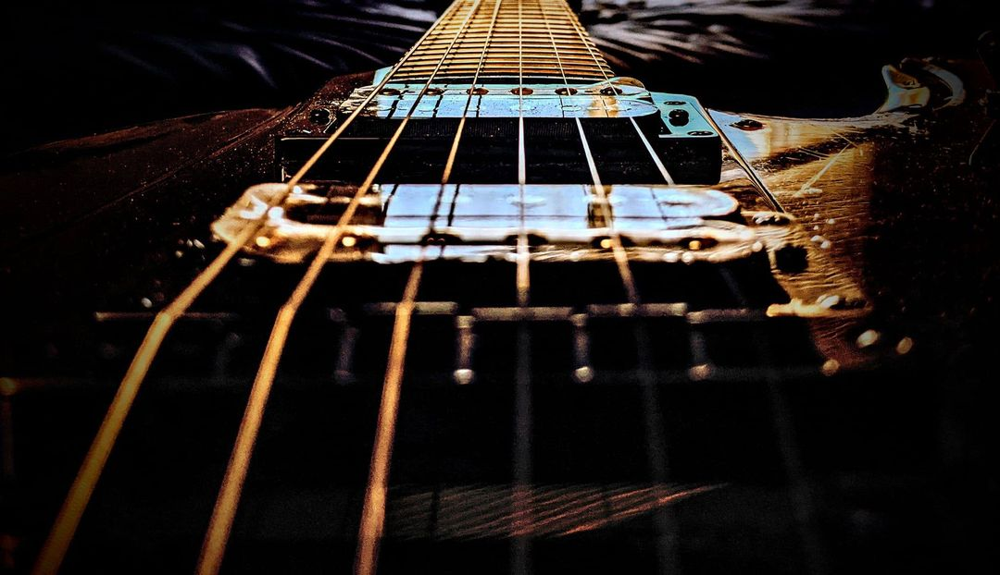

My Guitar Covers
If you like/dislike any of them, feel free to let me know (possibly in a non-generic way). I would in fact prefer a constructive criticism on how a cover could have been better than a simple generic "i liked it/i did not like it"
Nothing Else Matters (Metallica)
Tears in Heaven (Eric Clapton)
Window to the past (Harry Potter and the Prisoner of Azkaban)
Trisha's Lullaby (Full Metal Alchemist Brotherhood)
Brothers (Full Metal Alchemist)